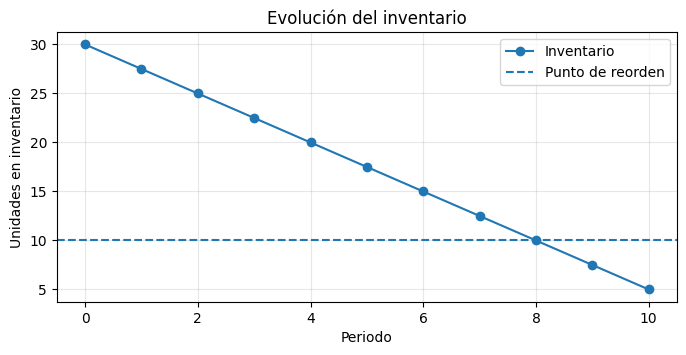
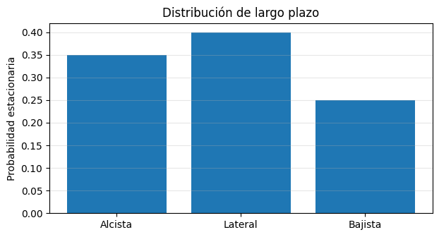
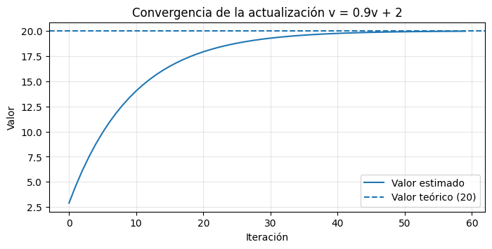
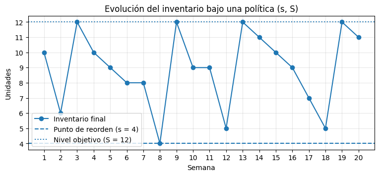
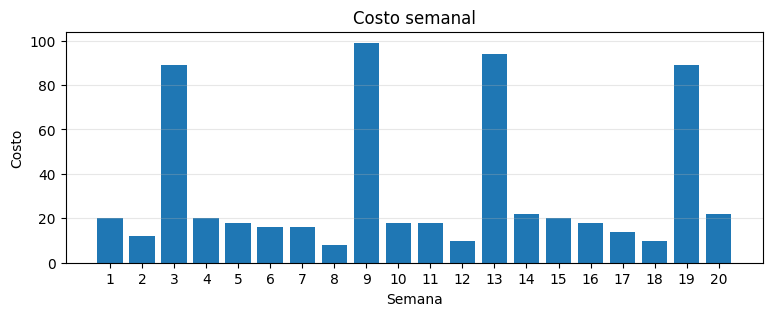

Complementaria 0 — Fundamentos de Python#
Modelos de Decisión en el Tiempo · Universidad de los Andes
Esta sesión es el punto de partida del curso. Su objetivo es que, al terminarla, puedas abrir cualquiera de las complementarias de las semanas 1 a 14 y entender qué hace cada línea de código, aunque todavía no sepas el modelo matemático que hay detrás.
No se supone ningún conocimiento previo de Python. Empezamos desde cero: qué es una celda,
qué es una variable y qué significa import.
Contenido#
Parte |
Tema |
Por qué lo necesitas en este curso |
|---|---|---|
0 |
El cuaderno de Jupyter |
Todas las sesiones se dictan en cuadernos |
1 |
Variables, tipos y operaciones |
Guardar tasas, costos y probabilidades |
2 |
Mostrar resultados con |
Reportar la respuesta de cada ejercicio |
3 |
Leer errores |
Un error no significa que el modelo esté mal |
4 |
Listas |
Guardar estados, políticas y recompensas |
5 |
Condicionales |
Reglas del tipo “si el inventario baja de \(s\), pedir” |
6 |
Ciclos |
Iterar sobre periodos, episodios e iteraciones |
7 |
Funciones |
Reutilizar una transición o una actualización |
8 |
Importar paquetes |
|
9 |
Leer documentación |
Saber qué recibe y qué devuelve una función |
10 |
NumPy esencial |
Matrices de transición y el operador |
11 |
Gráficas mínimas con Matplotlib |
Interpretar la evolución de un sistema |
12 |
Estilo de código del curso |
Escribir como escriben los cuadernos |
— |
Ejercicio integrador |
Une todo en un problema pequeño |
Cómo trabajar esta sesión#
Ejecuta las celdas de arriba hacia abajo, sin saltarte ninguna.
Cuando encuentres un Ejercicio, intenta resolverlo antes de mirar cualquier ayuda.
Si algo falla, lee el error: la Parte 3 te enseña exactamente cómo hacerlo.
Modifica el código de los ejemplos y vuelve a ejecutarlo. Romper una celda a propósito y entender por qué se rompió es una de las formas más rápidas de aprender.
⚠️ Antes de comenzar
Este cuaderno no requiere instalar nada en las primeras siete partes: usa solo Python. A partir de la Parte 8 usaremos
numpyymatplotlib, que normalmente ya vienen instalados con Anaconda. Si no los tienes, la Parte 8 te explica cómo instalarlos.
Parte 0 — El cuaderno de Jupyter#
Un cuaderno (notebook) es un documento formado por celdas. Hay dos tipos:
Tipo de celda |
Contiene |
Qué pasa al ejecutarla |
|---|---|---|
Markdown |
Texto, tablas, fórmulas |
Se convierte en texto con formato (como este párrafo) |
Código |
Instrucciones de Python |
Python las ejecuta y muestra el resultado abajo |
Cómo ejecutar una celda#
Haz clic sobre ella y presiona:
Shift+Enter→ ejecuta la celda y pasa a la siguiente;Ctrl+Enter(oCmd+Enteren Mac) → ejecuta la celda y se queda en ella.
Empieza por la celda de abajo.
print("Hola, Modelos de Decisión en el Tiempo")
Hola, Modelos de Decisión en el Tiempo
Qué acaba de pasar#
print(...) es una función: una instrucción que hace algo con lo que le pongas entre
paréntesis. En este caso, mostrar un texto en pantalla.
Fíjate en tres detalles que serán constantes durante todo el curso:
los paréntesis indican que estás llamando a la función;
el texto va entre comillas;
lo que aparece debajo de la celda es la salida del código.
A la izquierda de la celda verás algo como [1]. Ese número indica el orden en que
ejecutaste las celdas, no el orden en que están escritas. Si ves [ ], la celda nunca
se ejecutó; si ves [*], se está ejecutando en este momento.
El resultado de la última línea se muestra solo#
Si la última línea de una celda produce un valor, Jupyter lo muestra sin necesidad de
print. Esto solo ocurre con la última línea, y solo en Jupyter.
2 + 2
4
2 + 2
3 + 3
6
La celda anterior muestra únicamente 6: el resultado de 2 + 2 se calculó, pero se
perdió porque no estaba en la última línea y nadie lo guardó ni lo imprimió.
Conclusión práctica: cuando quieras ver varios resultados, usa print en cada uno.
print(2 + 2)
print(3 + 3)
4
6
El kernel: la memoria del cuaderno#
Detrás del cuaderno hay un proceso de Python llamado kernel. El kernel recuerda todo lo que has ejecutado. Por eso una celda puede usar algo definido en una celda anterior.
demanda_semanal = 40
print("La demanda semanal es", demanda_semanal)
La demanda semanal es 40
La segunda celda funcionó porque la primera ya se había ejecutado.
⚠️ El error más común de todo el semestre
Como el kernel recuerda, ejecutar las celdas en desorden produce resultados inconsistentes: puedes estar usando el valor viejo de una variable sin darte cuenta.
Si algo se comporta de forma extraña, la solución casi siempre es la misma: menú Kernel → Restart Kernel and Run All Cells (Reiniciar y ejecutar todo). Esto borra la memoria y vuelve a ejecutar el cuaderno en orden, de arriba hacia abajo.
Comentarios#
Todo lo que va después de # en una línea es un comentario: Python lo ignora por
completo. Sirve para explicarle al lector humano qué hace el código.
# Esta línea es un comentario y no se ejecuta.
costo_pedido = 120 # También se puede comentar al final de una línea.
print("Costo del pedido:", costo_pedido)
Costo del pedido: 120
Ejercicio 0.1#
En la celda siguiente:
escribe un comentario que diga qué vas a hacer;
imprime tu nombre;
imprime el resultado de \(7 \times 8\);
imprime el texto
Listoen una tercera línea.
Resultado esperado: tres líneas de salida.
# Ejercicio 0.1: imprimir un nombre, una multiplicación y un mensaje final.
print("Ana María Rodríguez")
print(7 * 8)
print("Listo")
Ana María Rodríguez
56
Listo
Ejercicio 0.2 — Predecir antes de ejecutar#
Lee la celda siguiente sin ejecutarla y escribe en un papel qué crees que va a mostrar. Después ejecútala y compara.
capacidad = 10
capacidad = 25
print("Capacidad:", capacidad)
Capacidad: 25
Respuesta 0.2. Muestra
Capacidad: 25.La segunda asignación reemplaza a la primera: una variable guarda un solo valor a la vez, el último que se le asignó. El valor
10se perdió.
Parte 1 — Variables, tipos y operaciones#
Una variable es un nombre que apunta a un valor. Se crea con el signo =, que en
Python no significa igualdad matemática sino asignación: “guarda a la derecha, con
el nombre de la izquierda”.
tasa_llegada = 4.5
numero_servidores = 3
nombre_sistema = "Centro de distribución Norte"
sistema_activo = True
print(tasa_llegada)
print(numero_servidores)
print(nombre_sistema)
print(sistema_activo)
4.5
3
Centro de distribución Norte
True
Los cuatro tipos básicos#
Tipo |
Nombre en Python |
Ejemplo |
Se usa para |
|---|---|---|---|
Entero |
|
|
Contar: periodos, estados, unidades |
Decimal |
|
|
Probabilidades, costos, tasas |
Texto |
|
|
Nombres de estados, mensajes |
Lógico |
|
|
Condiciones: ¿converge?, ¿es absorbente? |
La función type() te dice el tipo de un valor. La usarás muchas veces para depurar.
print(type(numero_servidores))
print(type(tasa_llegada))
print(type(nombre_sistema))
print(type(sistema_activo))
<class 'int'>
<class 'float'>
<class 'str'>
<class 'bool'>
Reglas para nombrar variables#
Obligatorio:
solo letras, números y guión bajo
_;no puede empezar por número;
Python distingue mayúsculas de minúsculas:
costoyCostoson variables distintas.
Convención del curso (mírala en cualquier cuaderno de las semanas 1 a 14):
nombres en minúscula, con palabras separadas por guión bajo:
probabilidad_defecto;nombres descriptivos y en español:
inventario_promedio, noxniip;evita tildes y
ñen los nombres de variables, aunque Python los acepte.
# Estilo del curso: se entiende sin explicación adicional.
probabilidad_falla = 0.05
costo_mantenimiento_preventivo = 250
# Estilo que debes evitar: nadie sabe qué significan dentro de tres semanas.
p = 0.05
cmp1 = 250
print("Probabilidad de falla:", probabilidad_falla)
Probabilidad de falla: 0.05
Operaciones aritméticas#
Operador |
Operación |
Ejemplo |
Resultado |
|---|---|---|---|
|
Suma |
|
|
|
Resta |
|
|
|
Multiplicación |
|
|
|
División (siempre decimal) |
|
|
|
División entera |
|
|
|
Residuo (módulo) |
|
|
|
Potencia |
|
|
⚠️ Dos avisos importantes para este curso
La potencia se escribe
**, no^. En Python^significa otra cosa por completo.
7 / 2da3.5incluso si ambos números son enteros. Y10 / 5da2.0(unfloat), no2.
print("7 + 2 =", 7 + 2)
print("7 / 2 =", 7 / 2)
print("7 // 2 =", 7 // 2)
print("7 % 2 =", 7 % 2)
print("7 ** 2 =", 7 ** 2)
print("10 / 5 =", 10 / 5)
7 + 2 = 9
7 / 2 = 3.5
7 // 2 = 3
7 % 2 = 1
7 ** 2 = 49
10 / 5 = 2.0
El orden de las operaciones#
Python respeta la jerarquía usual: primero **, luego * y /, y al final + y -.
Los paréntesis mandan sobre todo lo demás.
Cuando una fórmula tenga más de dos operaciones, usa paréntesis aunque no sean estrictamente necesarios: hacen el código legible y evitan errores silenciosos.
numero_componentes = 15
probabilidad_defecto = 0.12
# Desviación estándar de una binomial: sqrt(n * p * (1 - p))
# Sin paréntesis el código es correcto pero difícil de verificar.
desviacion = (numero_componentes * probabilidad_defecto * (1 - probabilidad_defecto)) ** 0.5
print("Media:", numero_componentes * probabilidad_defecto)
print("Desviación estándar:", desviacion)
Media: 1.7999999999999998
Desviación estándar: 1.2585706178041818
Observa que ** 0.5 es la raíz cuadrada. Es exactamente la forma en que la calcula el
cuaderno de la Semana 1.
Actualizar una variable usando su valor anterior#
Este patrón aparecerá en todas las sesiones del curso, sobre todo dentro de ciclos.
inventario = 10
inventario = inventario - 3 # Se venden 3 unidades.
print("Después de la venta:", inventario)
inventario = inventario + 8 # Llega un pedido de 8 unidades.
print("Después del pedido:", inventario)
Después de la venta: 7
Después del pedido: 15
La línea inventario = inventario - 3 no es una ecuación imposible: Python primero
calcula el lado derecho con el valor actual (10 - 3 = 7) y después guarda el
resultado en inventario.
Existe una forma abreviada, inventario -= 3, equivalente a la anterior. Los cuadernos del
curso prefieren la forma larga porque se lee con más claridad.
Convertir de un tipo a otro#
int(), float() y str() convierten valores. Serán útiles cuando quieras redondear
periodos o construir mensajes.
valor_decimal = 7.89
print(int(valor_decimal)) # Trunca, NO redondea: da 7.
print(round(valor_decimal)) # Redondea: da 8.
print(round(valor_decimal, 1)) # Redondea a 1 decimal: da 7.9.
print(float(3))
print("Semana " + str(4)) # Para unir texto y número con +, hay que convertir.
7
8
7.9
3.0
Semana 4
round(valor, 4)aparece constantemente en los cuadernos del curso para que las probabilidades se muestren legibles. No cambia el valor guardado: solo el que se imprime.
Ejercicio 1.1 — Costo total de una política de inventario#
Una bodega usa esta política semanal:
costo fijo por hacer un pedido: 95 unidades monetarias;
costo por unidad pedida: 12;
unidades pedidas: 40;
costo de mantener inventario: 3 por unidad, sobre un inventario promedio de 18 unidades.
Crea una variable con nombre descriptivo para cada dato, calcula el costo total semanal
y muéstralo con print.
Resultado esperado: 629
costo_fijo_pedido = 95
costo_unitario = 12
unidades_pedidas = 40
costo_mantener_unidad = 3
inventario_promedio = 18
costo_pedido = costo_fijo_pedido + costo_unitario * unidades_pedidas
costo_almacenamiento = costo_mantener_unidad * inventario_promedio
costo_total_semanal = costo_pedido + costo_almacenamiento
print("Costo de pedido:", costo_pedido)
print("Costo de almacenamiento:", costo_almacenamiento)
print("Costo total semanal:", costo_total_semanal)
Costo de pedido: 575
Costo de almacenamiento: 54
Costo total semanal: 629
Ejercicio 1.2 — Media y desviación de una binomial#
Una línea produce 20 piezas por turno y cada una es defectuosa con probabilidad 0.08, de forma independiente.
Para \(X \sim \operatorname{Bin}(n, p)\) se tiene:
Calcula e imprime la media, la varianza y la desviación estándar. Redondea la desviación a 4 decimales.
Recuerda: la raíz cuadrada se escribe
** 0.5.
numero_piezas = 20
probabilidad_defecto = 0.08
media_defectuosas = numero_piezas * probabilidad_defecto
varianza_defectuosas = numero_piezas * probabilidad_defecto * (1 - probabilidad_defecto)
desviacion_defectuosas = varianza_defectuosas ** 0.5
print("Media:", media_defectuosas)
print("Varianza:", varianza_defectuosas)
print("Desviación estándar:", round(desviacion_defectuosas, 4))
Media: 1.6
Varianza: 1.4720000000000002
Desviación estándar: 1.2133
Ejercicio 1.3 — ¿Qué tipo es cada resultado?#
Antes de ejecutar, predice el tipo de cada expresión. Después usa type() para verificar.
4 + 34 / 24 > 3"4" + "3"
print(4 + 3, "->", type(4 + 3))
print(4 / 2, "->", type(4 / 2))
print(4 > 3, "->", type(4 > 3))
print("4" + "3", "->", type("4" + "3"))
7 -> <class 'int'>
2.0 -> <class 'float'>
True -> <class 'bool'>
43 -> <class 'str'>
Respuesta 1.3.
7, de tipoint.
2.0, de tipofloat. La división siempre devuelvefloat, aunque el resultado sea exacto.
True, de tipobool. Una comparación produce un valor lógico.
"43", de tipostr. Con texto,+concatena; no suma. Este es un origen frecuente de errores cuando un dato se leyó como texto sin darse cuenta.
Parte 2 — Mostrar resultados con print#
En este curso el resultado de un ejercicio casi siempre se comunica con print. Vale la
pena dedicarle dos minutos.
Varios valores separados por comas#
print acepta varios argumentos separados por comas e inserta un espacio entre ellos.
Esta es la forma que usan todos los cuadernos del curso.
estado = "Bajista"
probabilidad = 0.2341
print("P(X = ", estado, ") =", round(probabilidad, 4))
P(X = Bajista ) = 0.2341
print() sin nada imprime una línea en blanco#
Sirve para separar bloques de resultados y hacerlos legibles.
print("Bloque 1")
print()
print("Bloque 2")
Bloque 1
Bloque 2
Alternativa moderna: f-strings#
Un texto que empieza por f permite insertar variables entre llaves {}. Es más cómodo
para controlar el formato:
periodo = 3
valor = 0.234567
print(f"En el periodo {periodo} la probabilidad es {valor:.4f}")
En el periodo 3 la probabilidad es 0.2346
{valor:.4f} significa “muestra valor con 4 decimales”.
Convención del curso: los cuadernos de las semanas 1 a 14 usan la forma con comas y
round(...). Puedes usar f-strings si te resultan cómodas, pero debes entender la forma con comas, porque es la que vas a leer.
Ejercicio 2.1 — Un reporte legible#
Con estos datos:
nombre_maquina = "Compresora A"
horas_operacion = 1450
tasa_falla = 0.0072
Imprime exactamente esto (tres líneas, y una línea en blanco antes de la última):
Máquina: Compresora A
Horas de operación: 1450
Fallas esperadas: 10.44
Las fallas esperadas son
horas_operacion * tasa_falla, redondeadas a 2 decimales.
nombre_maquina = "Compresora A"
horas_operacion = 1450
tasa_falla = 0.0072
fallas_esperadas = horas_operacion * tasa_falla
print("Máquina:", nombre_maquina)
print("Horas de operación:", horas_operacion)
print()
print("Fallas esperadas:", round(fallas_esperadas, 2))
Máquina: Compresora A
Horas de operación: 1450
Fallas esperadas: 10.44
Parte 3 — Leer errores (la habilidad más rentable del curso)#
Vas a ver muchos errores. Eso es normal y no significa que tu modelo esté mal: casi siempre significa que una línea está mal escrita.
Cuando Python falla, muestra un traceback. Se lee de abajo hacia arriba:
la última línea dice el tipo de error y el mensaje: ahí está la información útil;
las líneas de arriba dicen dónde ocurrió, con una flecha
---->señalando la línea.
Ejecuta la celda siguiente. Va a fallar a propósito.
tasa_servicio = 6
print("Utilización:", tasa_llegadaa / tasa_servicio)
---------------------------------------------------------------------------
NameError Traceback (most recent call last)
Cell In[24], line 2
1 tasa_servicio = 6
----> 2 print("Utilización:", tasa_llegadaa / tasa_servicio)
NameError: name 'tasa_llegadaa' is not defined
La última línea dice algo como:
NameError: name 'tasa_llegadaa' is not defined
Es decir: “el nombre tasa_llegadaa no existe”. Y en efecto: hay una letra a de más.
Corrígelo abajo.
tasa_llegada = 4.5
tasa_servicio = 6
print("Utilización:", tasa_llegada / tasa_servicio)
Utilización: 0.75
Catálogo de errores que verás este semestre#
Error |
Qué significa |
Causa típica |
|---|---|---|
|
Ese nombre no existe |
Error de digitación, o no ejecutaste la celda que lo define |
|
Operación entre tipos incompatibles |
Sumar texto con número; olvidar convertir |
|
División por cero |
Un denominador que resultó |
|
Posición fuera de rango |
Pedir |
|
Python no entiende la línea |
Falta un paréntesis, comilla o dos puntos |
|
Sangría incorrecta |
Falta o sobra espacio dentro de un |
|
El paquete no está instalado |
Falta |
|
Tipo correcto, valor imposible |
|
Un TypeError en vivo#
numero_periodos = 12
print("Total: " + numero_periodos)
---------------------------------------------------------------------------
TypeError Traceback (most recent call last)
Cell In[26], line 2
1 numero_periodos = 12
----> 2 print("Total: " + numero_periodos)
TypeError: can only concatenate str (not "int") to str
El mensaje can only concatenate str (not "int") to str dice literalmente que solo se
puede concatenar texto con texto. Hay dos arreglos posibles:
numero_periodos = 12
print("Total:", numero_periodos) # Opción 1: usar la coma (recomendada).
print("Total: " + str(numero_periodos)) # Opción 2: convertir a texto.
Total: 12
Total: 12
La sangría no es decorativa#
En Python, los espacios al inicio de la línea definen la estructura del programa. La convención universal es 4 espacios por nivel. Ejecuta la celda siguiente: falla.
inventario = 3
if inventario < 5:
print("Hay que pedir")
Cell In[28], line 4
print("Hay que pedir")
^
IndentationError: expected an indented block
IndentationError: expected an indented block significa: “esperaba un bloque con sangría”.
La línea que va dentro del if debe estar desplazada 4 espacios:
inventario = 3
if inventario < 5:
print("Hay que pedir")
Hay que pedir
Ejercicio 3.1 — Depuración#
La celda siguiente contiene tres errores. Ejecútala, lee el traceback, corrige el primer error, vuelve a ejecutar, y repite hasta que funcione.
El resultado correcto es:
Nivel: 8
Costo total: 96
# Errores corregidos:
# 1. Faltaban los dos puntos al final del if.
# 2. "Nivel: " + nivel_inventario mezclaba texto con entero -> se usa la coma.
# 3. costo_unitario no existe: la variable se llama costo_unidad.
# (Además, la sangría de las dos líneas del if debe ser la misma.)
nivel_inventario = 8
costo_unidad = 12
if nivel_inventario > 5:
print("Nivel:", nivel_inventario)
print("Costo total:", nivel_inventario * costo_unidad)
Nivel: 8
Costo total: 96
Ejercicio 3.2 — Anticipar el error#
Para cada línea, escribe qué tipo de error produce y por qué. Después compruébalo
ejecutando una por una (comenta las demás con #).
resultado = 10 / 0numeros = [1, 2, 3]seguido deprint(numeros[3])print("hola"total = "5" * "3"
# 1. ZeroDivisionError: division by zero
# resultado = 10 / 0
# 2. IndexError: list index out of range
# La lista tiene posiciones 0, 1 y 2. La posición 3 no existe.
# numeros = [1, 2, 3]
# print(numeros[3])
# 3. SyntaxError: falta cerrar el paréntesis.
# print("hola"
# 4. TypeError: can't multiply sequence by non-int of type 'str'
# Se puede hacer "ab" * 3, pero no "5" * "3".
# total = "5" * "3"
print("Revisa los comentarios de esta celda: cada línea está explicada.")
Revisa los comentarios de esta celda: cada línea está explicada.
Respuesta 3.2.
ZeroDivisionError— no se puede dividir por cero.
IndexError— la lista tiene tres elementos en las posiciones0,1y2; la posición3no existe. Este error aparecerá cuando indexes estados.
SyntaxError— falta cerrar el paréntesis. UnSyntaxErrorsuele señalar la línea siguiente al problema real, así que revisa también la línea anterior.
TypeError— multiplicar texto por texto no está definido. Curiosamente"5" * 3sí funciona y produce"555".
Parte 4 — Listas#
Una lista guarda varios valores en orden, dentro de corchetes [ ] y separados por comas.
En este curso las usarás para nombres de estados, secuencias de costos, historiales de
recompensas y muchas cosas más.
estados = ["Alcista", "Lateral", "Bajista"]
recompensas = [12.5, -3.0, 8.25, 0.0]
print(estados)
print(recompensas)
print("Número de estados:", len(estados))
['Alcista', 'Lateral', 'Bajista']
[12.5, -3.0, 8.25, 0.0]
Número de estados: 3
Indexación: la primera posición es la 0#
Esto no es un capricho: encaja perfectamente con la notación del curso, donde el espacio de
estados suele ser \(\mathcal{S} = \{0, 1, 2, \ldots\}\). El estado \(0\) está en la posición 0.
estados = ["Alcista", "Lateral", "Bajista"]
print("Posición 0:", estados[0])
print("Posición 2:", estados[2])
print("Última posición:", estados[-1]) # Los índices negativos cuentan desde el final.
Posición 0: Alcista
Posición 2: Bajista
Última posición: Bajista
Modificar, agregar y cortar#
demanda = [10, 14, 9, 22, 17]
demanda[0] = 11 # Reemplaza el primer valor.
demanda.append(25) # Agrega un valor al final.
print("Lista completa:", demanda)
print("Longitud:", len(demanda))
print("Primeros tres:", demanda[0:3]) # Desde 0 hasta 3 SIN incluir el 3.
print("Desde el tercero:", demanda[2:])
print("Suma:", sum(demanda))
print("Máximo:", max(demanda))
print("Mínimo:", min(demanda))
Lista completa: [11, 14, 9, 22, 17, 25]
Longitud: 6
Primeros tres: [11, 14, 9]
Desde el tercero: [9, 22, 17, 25]
Suma: 98
Máximo: 25
Mínimo: 9
⚠️ El corte
[a:b]excluye la posiciónb
demanda[0:3]devuelve las posiciones 0, 1 y 2. Es la misma lógica derange, que verás en la Parte 5: el límite superior nunca se incluye.
Construir una lista vacía y llenarla#
Este patrón — lista vacía, luego append dentro de un ciclo — aparece en casi todas las
complementarias para ir guardando resultados periodo a periodo.
historial_costos = []
historial_costos.append(120)
historial_costos.append(95)
historial_costos.append(140)
print(historial_costos)
print("Costo promedio:", sum(historial_costos) / len(historial_costos))
[120, 95, 140]
Costo promedio: 118.33333333333333
Ejercicio 4.1 — Demanda de seis semanas#
Dada la lista de demandas:
demanda_semanal = [34, 41, 28, 55, 39, 47]
Imprime:
la demanda de la primera semana;
la demanda de la última semana (sin escribir el número 5);
cuántas semanas hay;
la demanda total;
la demanda promedio, redondeada a 2 decimales;
las demandas de las semanas 2, 3 y 4 (es decir, posiciones 1, 2 y 3).
demanda_semanal = [34, 41, 28, 55, 39, 47]
print("Primera semana:", demanda_semanal[0])
print("Última semana:", demanda_semanal[-1])
print("Número de semanas:", len(demanda_semanal))
print("Demanda total:", sum(demanda_semanal))
print("Demanda promedio:", round(sum(demanda_semanal) / len(demanda_semanal), 2))
print("Semanas 2 a 4:", demanda_semanal[1:4])
Primera semana: 34
Última semana: 47
Número de semanas: 6
Demanda total: 244
Demanda promedio: 40.67
Semanas 2 a 4: [41, 28, 55]
Ejercicio 4.2 — Espacio de estados#
Un sistema de mantenimiento tiene los estados \(\mathcal{S} = \{0 = \text{Nuevo},\; 1 = \text{Regular},\; 2 = \text{Deteriorado},\; 3 = \text{Falla}\}\).
Crea la lista
estados_maquinacon los cuatro nombres, en orden.Imprime el nombre correspondiente al estado 2, usando el número como índice.
Agrega un quinto estado llamado
"Reemplazada".Imprime cuántos estados hay ahora.
estados_maquina = ["Nuevo", "Regular", "Deteriorado", "Falla"]
print("El estado 2 se llama:", estados_maquina[2])
estados_maquina.append("Reemplazada")
print("Lista actualizada:", estados_maquina)
print("Número de estados:", len(estados_maquina))
El estado 2 se llama: Deteriorado
Lista actualizada: ['Nuevo', 'Regular', 'Deteriorado', 'Falla', 'Reemplazada']
Número de estados: 5
Parte 5 — Condicionales#
Un condicional ejecuta un bloque solo si se cumple una condición. Es la forma de escribir reglas como “si el inventario está por debajo de \(s\), pedir hasta \(S\)”.
Operadores de comparación#
Operador |
Significado |
|---|---|
|
Igual a |
|
Distinto de |
|
Menor / menor o igual |
|
Mayor / mayor o igual |
⚠️
=no es==
=asigna un valor;==compara. Escribirif x = 5:es unSyntaxError.
inventario = 3
print(inventario < 5)
print(inventario == 3)
print(inventario != 3)
True
True
False
La estructura if / elif / else#
Fíjate en los dos elementos que no pueden faltar: los dos puntos al final de la línea y la sangría de 4 espacios del bloque.
nivel_inventario = 3
punto_reorden = 5
nivel_objetivo = 12
if nivel_inventario < punto_reorden:
cantidad_pedido = nivel_objetivo - nivel_inventario
print("Se hace un pedido de", cantidad_pedido, "unidades")
else:
cantidad_pedido = 0
print("No se pide nada")
print("Cantidad pedida:", cantidad_pedido)
Se hace un pedido de 9 unidades
Cantidad pedida: 9
La última línea no tiene sangría, así que se ejecuta siempre, sin importar qué rama se haya tomado.
Varias ramas con elif#
Python evalúa las condiciones en orden y ejecuta solo la primera que sea verdadera.
nivel_desgaste = 0.62
if nivel_desgaste < 0.30:
estado_maquina = "Nuevo"
elif nivel_desgaste < 0.60:
estado_maquina = "Regular"
elif nivel_desgaste < 0.90:
estado_maquina = "Deteriorado"
else:
estado_maquina = "Falla"
print("Desgaste:", nivel_desgaste, "-> Estado:", estado_maquina)
Desgaste: 0.62 -> Estado: Deteriorado
Por eso la condición nivel_desgaste < 0.90 no necesita decir “y además mayor o igual a
0.60”: si el código llegó hasta ahí, las anteriores ya fallaron.
Combinar condiciones: and, or, not#
Operador |
Verdadero cuando |
|---|---|
|
Ambas son verdaderas |
|
Al menos una es verdadera |
|
|
inventario = 4
demanda_pendiente = 7
capacidad_bodega = 20
if inventario < 5 and demanda_pendiente > 5:
print("Situación crítica: pedir con urgencia")
if inventario > capacidad_bodega or inventario < 0:
print("Inventario imposible")
else:
print("Inventario dentro de los límites")
Situación crítica: pedir con urgencia
Inventario dentro de los límites
Un condicional que usarás en aprendizaje por refuerzo#
En las semanas 12 a 14 aparece este patrón: comparar un número aleatorio contra una
probabilidad para decidir qué ocurre. Es exactamente un if con umbrales acumulados.
# La transición ocurre con probabilidades 0.5 / 0.2 / 0.3.
numero_aleatorio = 0.63
estado_actual = 2
if numero_aleatorio < 0.5:
estado_siguiente = estado_actual + 1
elif numero_aleatorio < 0.7:
estado_siguiente = estado_actual + 2
else:
estado_siguiente = estado_actual
print("Número aleatorio:", numero_aleatorio)
print("Estado siguiente:", estado_siguiente)
Número aleatorio: 0.63
Estado siguiente: 4
Ejercicio 5.1 — Política \((s, S)\)#
Escribe un condicional que, dado inventario_actual, calcule cantidad_pedido según la
política: si el inventario es menor que \(s = 4\), pedir hasta llegar a \(S = 10\); en caso
contrario, no pedir.
Prueba tu código con inventario_actual = 2 (debe pedir 8) y luego cámbialo a
inventario_actual = 7 (debe pedir 0).
inventario_actual = 2
punto_reorden = 4
nivel_maximo = 10
if inventario_actual < punto_reorden:
cantidad_pedido = nivel_maximo - inventario_actual
else:
cantidad_pedido = 0
print("Inventario actual:", inventario_actual)
print("Cantidad a pedir:", cantidad_pedido)
Inventario actual: 2
Cantidad a pedir: 8
Ejercicio 5.2 — Clasificar una probabilidad de falla#
Escribe un if / elif / else que asigne una categoría de riesgo a partir de
probabilidad_falla:
Condición |
Categoría |
|---|---|
menor que 0.05 |
|
entre 0.05 y 0.15 (sin incluir 0.15) |
|
entre 0.15 y 0.40 (sin incluir 0.40) |
|
0.40 o más |
|
Imprime la categoría. Verifica tu código con al menos tres valores distintos.
probabilidad_falla = 0.22
if probabilidad_falla < 0.05:
categoria_riesgo = "Bajo"
elif probabilidad_falla < 0.15:
categoria_riesgo = "Medio"
elif probabilidad_falla < 0.40:
categoria_riesgo = "Alto"
else:
categoria_riesgo = "Crítico"
print("Probabilidad de falla:", probabilidad_falla)
print("Categoría de riesgo:", categoria_riesgo)
# Verificación con otros valores.
print()
print("Pruebas rápidas:")
print("0.02 -> Bajo | 0.10 -> Medio | 0.55 -> Crítico")
Probabilidad de falla: 0.22
Categoría de riesgo: Alto
Pruebas rápidas:
0.02 -> Bajo | 0.10 -> Medio | 0.55 -> Crítico
Ejercicio 5.3 — Validar una fila de probabilidades#
Una fila de una matriz de transición debe cumplir dos condiciones: todos sus valores están entre 0 y 1, y suman 1.
Dada fila = [0.6, 0.3, 0.1], escribe un condicional que use sum(fila), min(fila) y
max(fila) para imprimir "Fila válida" o "Fila inválida".
Al sumar decimales pueden aparecer errores diminutos (
0.30000000000000004). Por eso, en vez desum(fila) == 1, se compara con una tolerancia:abs(sum(fila) - 1) < 0.000001.
fila = [0.6, 0.3, 0.1]
suma_fila = sum(fila)
if abs(suma_fila - 1) < 0.000001 and min(fila) >= 0 and max(fila) <= 1:
print("Fila válida. Suma:", round(suma_fila, 6))
else:
print("Fila inválida. Suma:", round(suma_fila, 6))
Fila válida. Suma: 1.0
Parte 6 — Ciclos#
Un ciclo repite un bloque de código. En este curso repetirás sobre periodos, estados, iteraciones y episodios. Es, sin exagerar, la estructura más usada del semestre.
for con range#
range(n) genera los números \(0, 1, \ldots, n-1\). El límite superior nunca se incluye.
for periodo in range(5):
print("Periodo", periodo)
Periodo 0
Periodo 1
Periodo 2
Periodo 3
Periodo 4
Escritura |
Genera |
|---|---|
|
|
|
|
|
|
En los cuadernos del curso verás mucho range(1, n + 1) cuando los periodos se numeran
desde 1, y range(len(lista)) cuando se recorre por posición.
for periodo in range(1, 6):
print("Periodo", periodo)
Periodo 1
Periodo 2
Periodo 3
Periodo 4
Periodo 5
Recorrer una lista#
Hay dos formas. Ambas aparecen en el curso.
estados = ["Alcista", "Lateral", "Bajista"]
# Forma 1: recorrer los valores directamente.
for nombre_estado in estados:
print("Estado:", nombre_estado)
print()
# Forma 2: recorrer las posiciones. Es la que usan los cuadernos cuando además
# se necesita el índice para entrar a una matriz.
for indice_estado in range(len(estados)):
print("Índice", indice_estado, "->", estados[indice_estado])
Estado: Alcista
Estado: Lateral
Estado: Bajista
Índice 0 -> Alcista
Índice 1 -> Lateral
Índice 2 -> Bajista
Nota de estilo. Existe
enumerate, que da índice y valor a la vez. Los cuadernos del curso no lo usan, ni tampoco comprensiones de lista,zipnilambda. La razón es pedagógica:for i in range(len(...))hace visible el índice, y el índice es el estado.
El patrón acumulador#
Inicializar una variable en 0, y sumarle algo en cada vuelta. Aparece en todo el curso:
costo total, recompensa acumulada, valor esperado.
demanda_semanal = [34, 41, 28, 55, 39, 47]
demanda_total = 0
for indice_semana in range(len(demanda_semanal)):
demanda_total = demanda_total + demanda_semanal[indice_semana]
print("Demanda total:", demanda_total)
print("Verificación con sum():", sum(demanda_semanal))
Demanda total: 244
Verificación con sum(): 244
Ese mismo patrón calcula un valor esperado: \(E[X] = \sum_i x_i \, p_i\).
valores_demanda = [0, 1, 2, 3]
probabilidades = [0.1, 0.3, 0.4, 0.2]
demanda_esperada = 0.0
for indice in range(len(valores_demanda)):
demanda_esperada = demanda_esperada + valores_demanda[indice] * probabilidades[indice]
print("Demanda esperada:", round(demanda_esperada, 4))
Demanda esperada: 1.7
Ciclos anidados#
Un ciclo dentro de otro recorre pares de índices. Así se recorre una matriz: la fila con el ciclo externo y la columna con el interno.
for fila in range(3):
for columna in range(3):
print("(", fila, ",", columna, ")", end=" ")
print()
( 0 , 0 ) ( 0 , 1 ) ( 0 , 2 )
( 1 , 0 ) ( 1 , 1 ) ( 1 , 2 )
( 2 , 0 ) ( 2 , 1 ) ( 2 , 2 )
while: repetir mientras se cumpla una condición#
Se usa cuando no sabes de antemano cuántas repeticiones hacen falta, típicamente hasta alcanzar convergencia.
inventario = 20
dia = 0
while inventario > 5:
inventario = inventario - 4
dia = dia + 1
print("Día", dia, "- inventario:", inventario)
print("Se llegó al punto de reorden en el día", dia)
Día 1 - inventario: 16
Día 2 - inventario: 12
Día 3 - inventario: 8
Día 4 - inventario: 4
Se llegó al punto de reorden en el día 4
⚠️ Ciclos infinitos
Si la condición de un
whilenunca se vuelve falsa, el cuaderno se queda ejecutando para siempre (verás[*]indefinidamente). Se detiene con el botón ⏹ Stop o con Kernel → Interrupt.Por seguridad, los cuadernos del curso suelen usar un
forcon un número máximo de iteraciones y unbreak, en lugar de unwhilepuro.
break y el patrón de convergencia#
break sale del ciclo inmediatamente. Este es exactamente el patrón que usan las
semanas 2 y 8 para detectar convergencia de una distribución o de una función de valor.
valor_actual = 100.0
tolerancia = 0.001
for iteracion in range(1, 1000):
valor_nuevo = 0.5 * valor_actual + 10 # Una actualización cualquiera.
cambio = abs(valor_nuevo - valor_actual)
valor_actual = valor_nuevo
if cambio < tolerancia:
break
print("Iteraciones necesarias:", iteracion)
print("Valor final:", round(valor_actual, 6))
print("Último cambio:", round(cambio, 8))
Iteraciones necesarias: 17
Valor final: 20.00061
Último cambio: 0.00061035
Léelo con calma, porque lo verás muchas veces:
se calcula el valor nuevo a partir del actual;
se mide el cambio con
abs(...), porque solo importa la magnitud;se actualiza la variable;
si el cambio es menor que la tolerancia, se corta el ciclo.
El for ... range(1, 1000) actúa como red de seguridad: si nunca converge, el programa
termina de todos modos.
Ejercicio 6.1 — Tabla de periodos#
Usa un ciclo for para imprimir, para los periodos 1 a 6, el inventario que resulta de
empezar en 30 unidades y consumir 4 por periodo. La salida debe verse así:
Periodo 1 - inventario: 26
Periodo 2 - inventario: 22
...
Periodo 6 - inventario: 6
inventario = 30
consumo_periodo = 4
for periodo in range(1, 7):
inventario = inventario - consumo_periodo
print("Periodo", periodo, "- inventario:", inventario)
Periodo 1 - inventario: 26
Periodo 2 - inventario: 22
Periodo 3 - inventario: 18
Periodo 4 - inventario: 14
Periodo 5 - inventario: 10
Periodo 6 - inventario: 6
Ejercicio 6.2 — Costo acumulado con una regla#
Una máquina opera 12 meses. Cada mes cuesta 80 operarla. Además, cada tercer mes (meses 3, 6, 9 y 12) se hace un mantenimiento que cuesta 150 adicionales.
Con un ciclo y un condicional, calcula el costo total del año e imprime también el costo acumulado en el mes 6.
Pista:
mes % 3 == 0es verdadero cuandomeses múltiplo de 3.
Resultado esperado: costo total 1560, acumulado en el mes 6 780.
costo_operacion_mensual = 80
costo_mantenimiento = 150
costo_acumulado = 0
costo_acumulado_mes_6 = 0
for mes in range(1, 13):
costo_mes = costo_operacion_mensual
if mes % 3 == 0:
costo_mes = costo_mes + costo_mantenimiento
costo_acumulado = costo_acumulado + costo_mes
if mes == 6:
costo_acumulado_mes_6 = costo_acumulado
print("Costo total del año:", costo_acumulado)
print("Costo acumulado en el mes 6:", costo_acumulado_mes_6)
Costo total del año: 1560
Costo acumulado en el mes 6: 780
Ejercicio 6.3 — Guardar la trayectoria en una lista#
Repite el Ejercicio 6.1, pero en vez de imprimir dentro del ciclo, guarda cada valor en
una lista llamada historial_inventario usando append. Al terminar el ciclo, imprime la
lista completa, su valor máximo y su valor mínimo.
inventario = 30
consumo_periodo = 4
historial_inventario = []
for periodo in range(1, 7):
inventario = inventario - consumo_periodo
historial_inventario.append(inventario)
print("Historial:", historial_inventario)
print("Máximo:", max(historial_inventario))
print("Mínimo:", min(historial_inventario))
Historial: [26, 22, 18, 14, 10, 6]
Máximo: 26
Mínimo: 6
Ejercicio 6.4 — Convergencia#
Empezando en valor = 1.0, aplica repetidamente la actualización
hasta que el cambio absoluto entre dos iteraciones consecutivas sea menor que 0.0001.
Usa el patrón for + break que acabas de ver.
Imprime el número de iteraciones y el valor final redondeado a 4 decimales.
El valor al que converge es la solución de \(v = 0.9v + 2\), es decir \(v = 20\). Úsalo para verificar que tu código está bien.
valor_actual = 1.0
tolerancia = 0.0001
for iteracion in range(1, 10000):
valor_nuevo = 0.9 * valor_actual + 2
cambio = abs(valor_nuevo - valor_actual)
valor_actual = valor_nuevo
if cambio < tolerancia:
break
print("Iteraciones:", iteracion)
print("Valor final:", round(valor_actual, 4))
print("Valor teórico:", 20)
Iteraciones: 95
Valor final: 19.9991
Valor teórico: 20
Parte 7 — Funciones#
Una función empaqueta un bloque de código con un nombre, para poder reutilizarlo. En el
curso definirás funciones como paso_flota(estado, accion) o politica_greedy(Q, estado).
Anatomía de una función#
def nombre_funcion(parametro_1, parametro_2):
# cuerpo, con sangría de 4 espacios
return resultado
definicia la definición;entre paréntesis van los parámetros (la información que necesita);
returnentrega el resultado y termina la función.
def costo_pedido(cantidad, costo_fijo, costo_unitario):
costo_total = costo_fijo + costo_unitario * cantidad
return costo_total
Ejecutar esa celda no imprime nada: solo define la función. Para usarla hay que llamarla.
costo_a = costo_pedido(40, 95, 12)
costo_b = costo_pedido(10, 95, 12)
print("Pedido de 40 unidades:", costo_a)
print("Pedido de 10 unidades:", costo_b)
print("Diferencia:", costo_a - costo_b)
Pedido de 40 unidades: 575
Pedido de 10 unidades: 215
Diferencia: 360
return no es print#
Es la confusión más frecuente al empezar. print muestra algo en pantalla; return
entrega un valor que puedes guardar y seguir usando.
def con_return(x):
return x * 2
def con_print(x):
print(x * 2)
resultado_1 = con_return(5)
resultado_2 = con_print(5) # Imprime 10, pero no devuelve nada.
print("Guardado con return:", resultado_1)
print("Guardado con print:", resultado_2) # None: la función no devolvió nada.
10
Guardado con return: 10
Guardado con print: None
None es el valor que Python usa para decir “aquí no hay nada”. Si ves None donde
esperabas un número, revisa si a tu función le falta el return.
Valores por defecto#
Un parámetro puede tener un valor predeterminado. Si no lo especificas al llamar, se usa ese.
def valor_descontado(recompensa, gamma=0.95, periodos=1):
return recompensa * (gamma ** periodos)
print("Con gamma por defecto:", round(valor_descontado(100), 4))
print("Con gamma = 0.8:", round(valor_descontado(100, 0.8), 4))
print("Con gamma = 0.8 y 3 periodos:", round(valor_descontado(100, 0.8, 3), 4))
print("Nombrando el parámetro:", round(valor_descontado(100, periodos=3), 4))
Con gamma por defecto: 95.0
Con gamma = 0.8: 80.0
Con gamma = 0.8 y 3 periodos: 51.2
Nombrando el parámetro: 85.7375
La última línea usa un argumento por nombre (periodos=3). Sirve para saltarse
parámetros intermedios y, sobre todo, para que el código se explique solo. Lo verás mucho al
llamar funciones de bibliotecas: expon.sf(8, scale=6), plt.figure(figsize=(8, 3.5)).
Devolver varios valores#
Basta separarlos con comas.
def resumen_lista(valores):
total = sum(valores)
promedio = total / len(valores)
return total, promedio
demanda_semanal = [34, 41, 28, 55, 39, 47]
demanda_total, demanda_promedio = resumen_lista(demanda_semanal)
print("Total:", demanda_total)
print("Promedio:", round(demanda_promedio, 2))
Total: 244
Promedio: 40.67
Documentar una función#
El texto entre triples comillas justo después del def es el docstring. No es un
adorno: es lo que help() te va a mostrar (ver Parte 9).
def utilizacion(tasa_llegada, tasa_servicio):
"""Calcula la utilización rho = lambda / mu de un sistema de colas.
Parámetros
----------
tasa_llegada : float
Clientes que llegan por unidad de tiempo.
tasa_servicio : float
Clientes que puede atender un servidor por unidad de tiempo.
Devuelve
--------
float
La utilización del sistema. Debe ser menor que 1 para que sea estable.
"""
return tasa_llegada / tasa_servicio
print("Utilización:", round(utilizacion(4.5, 6), 4))
help(utilizacion)
Utilización: 0.75
Help on function utilizacion in module __main__:
utilizacion(tasa_llegada, tasa_servicio)
Calcula la utilización rho = lambda / mu de un sistema de colas.
Parámetros
----------
tasa_llegada : float
Clientes que llegan por unidad de tiempo.
tasa_servicio : float
Clientes que puede atender un servidor por unidad de tiempo.
Devuelve
--------
float
La utilización del sistema. Debe ser menor que 1 para que sea estable.
Ejercicio 7.1 — Función de política \((s, S)\)#
Convierte el Ejercicio 5.1 en una función:
def cantidad_a_pedir(inventario_actual, punto_reorden, nivel_maximo):
...
Debe devolver (no imprimir) la cantidad a pedir. Pruébala con tres inventarios
distintos: 2, 4 y 7.
Resultados esperados con \(s=4\), \(S=10\): 8, 0, 0.
def cantidad_a_pedir(inventario_actual, punto_reorden, nivel_maximo):
"""Devuelve las unidades a pedir bajo una política (s, S)."""
if inventario_actual < punto_reorden:
cantidad = nivel_maximo - inventario_actual
else:
cantidad = 0
return cantidad
print("Inventario 2 ->", cantidad_a_pedir(2, 4, 10))
print("Inventario 4 ->", cantidad_a_pedir(4, 4, 10))
print("Inventario 7 ->", cantidad_a_pedir(7, 4, 10))
Inventario 2 -> 8
Inventario 4 -> 0
Inventario 7 -> 0
Ejercicio 7.2 — Valor esperado como función#
Escribe valor_esperado(valores, probabilidades) que reciba dos listas del mismo tamaño y
devuelva \(\sum_i x_i p_i\), usando un ciclo for con el patrón acumulador.
Pruébala con valores = [0, 1, 2, 3] y probabilidades = [0.1, 0.3, 0.4, 0.2].
Resultado esperado: 1.7
def valor_esperado(valores, probabilidades):
"""Calcula E[X] = suma de x_i * p_i para dos listas del mismo tamaño."""
acumulado = 0.0
for indice in range(len(valores)):
acumulado = acumulado + valores[indice] * probabilidades[indice]
return acumulado
valores_demanda = [0, 1, 2, 3]
probabilidades_demanda = [0.1, 0.3, 0.4, 0.2]
print("Valor esperado:", round(valor_esperado(valores_demanda, probabilidades_demanda), 4))
Valor esperado: 1.7
Ejercicio 7.3 — Con valor por defecto#
Escribe costo_total(cantidad, costo_unitario, costo_fijo=100) que devuelva el costo total
de un pedido. Llámala dos veces: una usando el costo fijo por defecto y otra pasándole
costo_fijo=250.
def costo_total(cantidad, costo_unitario, costo_fijo=100):
"""Costo de un pedido: costo fijo más costo variable."""
return costo_fijo + costo_unitario * cantidad
print("Con costo fijo por defecto:", costo_total(40, 12))
print("Con costo fijo de 250:", costo_total(40, 12, costo_fijo=250))
Con costo fijo por defecto: 580
Con costo fijo de 250: 730
Parte 8 — Importar paquetes#
Python de base sabe sumar y hacer ciclos, pero no sabe multiplicar matrices ni dibujar gráficas. Esas capacidades vienen en paquetes (también llamados bibliotecas o librerías) que hay que instalar una vez e importar en cada cuaderno.
Los paquetes de este curso#
Paquete |
Para qué sirve |
Dónde aparece |
|---|---|---|
|
Vectores, matrices, operaciones numéricas |
Todas las semanas |
|
Gráficas |
Todas las semanas |
|
Distribuciones de probabilidad |
Semana 1 |
|
Cadenas de Markov y MDP |
Semanas 1 a 10 |
Paso 1 — Instalar (una sola vez por computador)#
Se hace con pip. Dentro de un cuaderno se escribe con un signo de admiración al principio,
que significa “ejecuta esto como si fuera una terminal”:
!pip install jmarkov
Si el paquete ya está instalado, verás un mensaje del tipo
Requirement already satisfied. Eso no es un error: significa que todo está bien.
La celda de abajo instala numpy y matplotlib. Si usas Anaconda ya los tienes, y
simplemente confirmará que el requisito está satisfecho.
!pip install numpy matplotlib
zsh:1: command not found: pip
Paso 2 — Importar (una vez en cada cuaderno)#
Instalar pone el paquete en tu computador. Importar lo carga en la memoria de este cuaderno. Hay tres formas:
# Forma 1: importar el paquete completo.
import math
print(math.sqrt(16))
print(math.pi)
4.0
3.141592653589793
# Forma 2: importar con un alias corto. Es la forma estándar para numpy y matplotlib.
import numpy as np
import matplotlib.pyplot as plt
print(np.sqrt(16))
4.0
# Forma 3: importar solo algunas funciones de un paquete.
from math import sqrt, pi
print(sqrt(16))
print(pi)
4.0
3.141592653589793
Cómo leer las importaciones de los cuadernos del curso#
Este bloque abre casi todas las complementarias:
import numpy as np
import matplotlib.pyplot as plt
from scipy.stats import binom, poisson, expon
from jmarkov.dtmc import dtmc
Léelo así:
Línea |
Significado |
|---|---|
|
Carga NumPy; a partir de ahora se escribe |
|
Carga el submódulo |
|
Del submódulo |
|
Del submódulo |
El punto se lee como “dentro de”: scipy.stats es el módulo stats que está dentro de
scipy.
Por qué
npyplt. Son alias por convención universal. Millones de líneas de código los usan, así que respétalos: escribirimport numpy as numericofunciona, pero hace tu código ilegible para cualquier otra persona.
El error ModuleNotFoundError#
Si al importar ves:
ModuleNotFoundError: No module named 'jmarkov'
el paquete no está instalado en el entorno que estás usando. La solución es ejecutar
!pip install jmarkov y volver a ejecutar la celda del import.
Dónde vive lo que importas#
Después de import numpy as np, todas las herramientas de NumPy se escriben con el prefijo
np.. Si escribes array([1, 2, 3]) sin el prefijo, obtendrás un NameError.
import numpy as np
print(np.array([1, 2, 3])) # Correcto.
[1 2 3]
print(array([1, 2, 3])) # Falla: NameError.
---------------------------------------------------------------------------
NameError Traceback (most recent call last)
Cell In[72], line 1
----> 1 print(array([1, 2, 3])) # Falla: NameError.
NameError: name 'array' is not defined
Ejercicio 8.1 — Tu primer bloque de importaciones#
En la celda siguiente:
importa
numpycon el aliasnp;importa
matplotlib.pyplotcon el aliasplt;importa solo la función
factorialdel módulomath;imprime
np.pi, y el factorial de 5.
Resultado esperado: 3.141592653589793 y 120.
import numpy as np
import matplotlib.pyplot as plt
from math import factorial
print("Pi según NumPy:", np.pi)
print("Factorial de 5:", factorial(5))
Pi según NumPy: 3.141592653589793
Factorial de 5: 120
Parte 9 — Leer documentación#
Nadie memoriza los paquetes. Lo que distingue a alguien que programa con soltura es que sabe averiguar qué hace una función. Hay tres herramientas, de la más rápida a la más completa.
Herramienta 1 — help(...)#
Muestra la documentación dentro del cuaderno.
import numpy as np
help(np.round)
Help on _ArrayFunctionDispatcher in module numpy:
round(a, decimals=0, out=None)
Evenly round to the given number of decimals.
Parameters
----------
a : array_like
Input data.
decimals : int, optional
Number of decimal places to round to (default: 0). If
decimals is negative, it specifies the number of positions to
the left of the decimal point.
out : ndarray, optional
Alternative output array in which to place the result. It must have
the same shape as the expected output, but the type of the output
values will be cast if necessary. See :ref:`ufuncs-output-type` for more
details.
Returns
-------
rounded_array : ndarray
An array of the same type as `a`, containing the rounded values.
Unless `out` was specified, a new array is created. A reference to
the result is returned.
The real and imaginary parts of complex numbers are rounded
separately. The result of rounding a float is a float.
See Also
--------
ndarray.round : equivalent method
around : an alias for this function
ceil, fix, floor, rint, trunc
Notes
-----
For values exactly halfway between rounded decimal values, NumPy
rounds to the nearest even value. Thus 1.5 and 2.5 round to 2.0,
-0.5 and 0.5 round to 0.0, etc.
``np.round`` uses a fast but sometimes inexact algorithm to round
floating-point datatypes. For positive `decimals` it is equivalent to
``np.true_divide(np.rint(a * 10**decimals), 10**decimals)``, which has
error due to the inexact representation of decimal fractions in the IEEE
floating point standard [1]_ and errors introduced when scaling by powers
of ten. For instance, note the extra "1" in the following:
>>> np.round(56294995342131.5, 3)
56294995342131.51
If your goal is to print such values with a fixed number of decimals, it is
preferable to use numpy's float printing routines to limit the number of
printed decimals:
>>> np.format_float_positional(56294995342131.5, precision=3)
'56294995342131.5'
The float printing routines use an accurate but much more computationally
demanding algorithm to compute the number of digits after the decimal
point.
Alternatively, Python's builtin `round` function uses a more accurate
but slower algorithm for 64-bit floating point values:
>>> round(56294995342131.5, 3)
56294995342131.5
>>> np.round(16.055, 2), round(16.055, 2) # equals 16.0549999999999997
(16.06, 16.05)
References
----------
.. [1] "Lecture Notes on the Status of IEEE 754", William Kahan,
https://people.eecs.berkeley.edu/~wkahan/ieee754status/IEEE754.PDF
Examples
--------
>>> np.round([0.37, 1.64])
array([0., 2.])
>>> np.round([0.37, 1.64], decimals=1)
array([0.4, 1.6])
>>> np.round([.5, 1.5, 2.5, 3.5, 4.5]) # rounds to nearest even value
array([0., 2., 2., 4., 4.])
>>> np.round([1,2,3,11], decimals=1) # ndarray of ints is returned
array([ 1, 2, 3, 11])
>>> np.round([1,2,3,11], decimals=-1)
array([ 0, 0, 0, 10])
Herramienta 2 — el signo ?#
En Jupyter, escribir ? después del nombre abre la documentación en un panel. Es más cómodo
para consultas rápidas.
np.linspace?
Herramienta 3 — la documentación oficial en línea#
Para entender de verdad una función, la página oficial trae explicación y ejemplos:
Paquete |
Sitio |
|---|---|
NumPy |
|
Matplotlib |
|
SciPy |
|
Una búsqueda como numpy zeros documentation te lleva directo.
Cómo se lee una firma de función#
Lo primero que aparece en toda documentación es la firma (signature). Por ejemplo:
np.linspace(start, stop, num=50, endpoint=True, retstep=False, dtype=None, axis=0)
Se lee así:
Elemento |
Lectura |
|---|---|
|
Obligatorios: no tienen |
|
Opcional: si no lo das, vale 50 |
|
Opcional, con valor por defecto |
Y hay una regla de orden que importa: los argumentos sin nombre se asignan por posición, en orden. Los que van con nombre pueden ir en cualquier orden, pero siempre después.
import numpy as np
# Los tres primeros van por posición: start=0, stop=1, num=5.
print(np.linspace(0, 1, 5))
# Lo mismo, pero nombrando el tercero. Más legible.
print(np.linspace(0, 1, num=5))
# Cambiando un parámetro opcional que estaba por defecto.
print(np.linspace(0, 1, num=5, endpoint=False))
[0. 0.25 0.5 0.75 1. ]
[0. 0.25 0.5 0.75 1. ]
[0. 0.2 0.4 0.6 0.8]
Las tres preguntas que debes hacerle a la documentación#
Cuando te encuentres una función nueva en un cuaderno del curso, respóndete:
¿Qué recibe? — cuántos argumentos, en qué orden, cuáles son obligatorios.
¿Qué devuelve? — ¿un número?, ¿un arreglo?, ¿dos cosas a la vez?
¿Qué convención usa? — la más peligrosa de todas.
La tercera pregunta es la que más problemas causa en este curso. Ejemplo real de la Semana 1:
en scipy.stats, la exponencial no recibe la tasa \(\lambda\), sino la media
\(\text{scale} = 1/\lambda\). Escribir expon.sf(8, scale=6) y expon.sf(8, 6) da lo mismo,
pero expon.sf(8, 1/6) da un resultado completamente distinto… y sin ningún error.
⚠️ Un código que corre no es un código correcto
Un error de Python es una molestia de dos minutos. Un error de convención no produce ningún mensaje: produce un número equivocado que se ve razonable. Por eso el curso insiste en verificar cada resultado contra un cálculo manual.
Explorar un objeto con dir(...)#
dir lista todo lo que un objeto sabe hacer. Es útil cuando no recuerdas el nombre exacto
de un método.
lista_ejemplo = [3, 1, 2]
# Se filtran los nombres que empiezan por "_", que son de uso interno.
metodos_publicos = []
for nombre in dir(lista_ejemplo):
if not nombre.startswith("_"):
metodos_publicos.append(nombre)
print(metodos_publicos)
['append', 'clear', 'copy', 'count', 'extend', 'index', 'insert', 'pop', 'remove', 'reverse', 'sort']
Ejercicio 9.1 — Investigar np.zeros#
Usando help(np.zeros) o np.zeros?, responde:
¿Cuál es el único argumento obligatorio?
¿Qué tipo de dato produce por defecto: enteros o decimales?
Crea un arreglo de 5 ceros y otro de 3 filas por 4 columnas.
Pista: para dos dimensiones, la forma se pasa entre paréntesis:
np.zeros((3, 4)).
import numpy as np
# 1. El único argumento obligatorio es "shape": la forma del arreglo.
# 2. Por defecto el tipo es float64, es decir, decimales (verás 0. en lugar de 0).
# 3. Creación de los dos arreglos:
ceros_1d = np.zeros(5)
ceros_2d = np.zeros((3, 4))
print("Cinco ceros:", ceros_1d)
print("Tipo de dato:", ceros_1d.dtype)
print()
print("Matriz 3x4:")
print(ceros_2d)
Cinco ceros: [0. 0. 0. 0. 0.]
Tipo de dato: float64
Matriz 3x4:
[[0. 0. 0. 0.]
[0. 0. 0. 0.]
[0. 0. 0. 0.]]
Respuesta 9.1.
shape— el único obligatorio. Puede ser un entero (5) o una tupla ((3, 4)).
float64: decimales. Por eso se imprime0.y no0. Si necesitas enteros,np.zeros(5, dtype=int).
np.zeros(5)ynp.zeros((3, 4)). Nota el doble paréntesis del segundo: la forma es un solo argumento que resulta ser una pareja de números.
Ejercicio 9.2 — Interpretar una firma#
Esta es la firma de una función de jmarkov que usarás en la Semana 1:
cadena.transient_probabilities(n, alpha)
y esta es la llamada que aparece en el cuaderno:
pi3 = cadena_inventario.transient_probabilities(n=3, alpha=pi0_inventario)
Responde en la celda de texto de abajo, con tus palabras:
¿Qué representa
n?¿Qué representa
alpha?¿Por qué el cuaderno escribe
n=3en vez de simplemente3?¿Qué crees que devuelve: un número o un arreglo?
(Escribe tu respuesta haciendo doble clic sobre la celda siguiente.)
Tu respuesta:
Respuesta 9.2.
nes el número de pasos: cuántos periodos avanza la cadena desde el inicio.
alphaes la distribución inicial \(\pi(0)\): un vector de probabilidades sobre los estados, que debe sumar 1.Por legibilidad.
transient_probabilities(n=3, alpha=pi0)se entiende sin consultar la documentación;transient_probabilities(3, pi0)obliga a recordar el orden. Además, nombrar los argumentos protege contra invertirlos por accidente.Devuelve un arreglo: la distribución \(\pi(3)\) completa, con una probabilidad por cada estado. No un solo número.
Parte 10 — NumPy esencial#
NumPy es el paquete central del curso. Un arreglo (array) se parece a una lista, pero permite hacer operaciones numéricas y matriciales directamente.
Todo lo de esta parte se usa desde la Semana 1.
import numpy as np
np.set_printoptions(precision=4, suppress=True) # Salidas más legibles: 4 decimales, sin notación científica.
vector_ejemplo = np.array([1.0, 0.0, 0.0])
matriz_ejemplo = np.array([
[0.60, 0.30, 0.10],
[0.20, 0.50, 0.30],
[0.10, 0.30, 0.60]
])
print("Vector:", vector_ejemplo)
print()
print("Matriz:")
print(matriz_ejemplo)
print()
print("Forma del vector:", vector_ejemplo.shape)
print("Forma de la matriz:", matriz_ejemplo.shape)
Vector: [1. 0. 0.]
Matriz:
[[0.6 0.3 0.1]
[0.2 0.5 0.3]
[0.1 0.3 0.6]]
Forma del vector: (3,)
Forma de la matriz: (3, 3)
.shape devuelve las dimensiones. (3,) es un vector de 3 elementos; (3, 3) es una matriz
de 3 filas y 3 columnas. Cuando NumPy te dé un error de dimensiones, .shape es lo primero
que debes imprimir.
Indexar una matriz: [fila, columna]#
Ambos índices empiezan en 0, igual que en las listas. Esto encaja con la notación
\(P_{ij}\) del curso: P[i, j] es la probabilidad de pasar del estado \(i\) al estado \(j\).
print("Entrada [0, 1]:", matriz_ejemplo[0, 1])
print("Fila 0 completa:", matriz_ejemplo[0, :])
print("Columna 2 completa:", matriz_ejemplo[:, 2])
print("Suma de la fila 0:", matriz_ejemplo[0, :].sum())
Entrada [0, 1]: 0.3
Fila 0 completa: [0.6 0.3 0.1]
Columna 2 completa: [0.1 0.3 0.6]
Suma de la fila 0: 0.9999999999999999
Los dos puntos : significan “todos”: matriz[0, :] es “fila 0, todas las columnas”.
Crear arreglos sin escribirlos a mano#
Función |
Produce |
|---|---|
|
Cinco ceros |
|
Matriz 3×4 de ceros |
|
Cuatro unos |
|
|
|
5 valores igualmente espaciados incluyendo ambos extremos |
|
Matriz identidad 3×3 |
print("zeros(5): ", np.zeros(5))
print("ones(4): ", np.ones(4))
print("arange(0,10,2):", np.arange(0, 10, 2))
print("linspace(0,1,5):", np.linspace(0, 1, 5))
print()
print("eye(3):")
print(np.eye(3))
zeros(5): [0. 0. 0. 0. 0.]
ones(4): [1. 1. 1. 1.]
arange(0,10,2): [0 2 4 6 8]
linspace(0,1,5): [0. 0.25 0.5 0.75 1. ]
eye(3):
[[1. 0. 0.]
[0. 1. 0.]
[0. 0. 1.]]
arangefrente alinspace. Enarange(0, 10, 2)das el paso y el extremo derecho se excluye. Enlinspace(0, 1, 5)das la cantidad de puntos y ambos extremos se incluyen. Confundirlas es una fuente clásica de gráficas raras.
Operaciones elemento a elemento#
Con arreglos puedes operar sin escribir ciclos: la operación se aplica a cada posición.
costos = np.array([100.0, 250.0, 80.0])
cantidades = np.array([4.0, 2.0, 10.0])
print("Suma: ", costos + cantidades)
print("Producto: ", costos * cantidades) # Elemento a elemento, NO producto matricial.
print("Por escalar: ", costos * 2)
print("Total: ", (costos * cantidades).sum())
Suma: [104. 252. 90.]
Producto: [400. 500. 800.]
Por escalar: [200. 500. 160.]
Total: 1700.0
El operador @: producto matricial#
Esta es la operación del curso. Si \(\pi(0)\) es la distribución inicial (un vector fila) y \(P\) la matriz de transición:
En Python se escribe pi_1 = pi_0 @ P.
pi_0 = np.array([0.0, 0.0, 1.0]) # El sistema empieza en el estado 2.
P = matriz_ejemplo
pi_1 = pi_0 @ P
print("Distribución inicial:", pi_0)
print("Después de un paso: ", pi_1)
print("Suma (debe ser 1): ", pi_1.sum())
Distribución inicial: [0. 0. 1.]
Después de un paso: [0.1 0.3 0.6]
Suma (debe ser 1): 1.0
Para ver que @ no tiene nada de mágico, aquí está el mismo cálculo escrito con dos ciclos,
tal como aparece en la Semana 1:
pi_1_manual = np.zeros(3)
for estado_destino in range(3):
suma = 0.0
for estado_origen in range(3):
suma = suma + pi_0[estado_origen] * P[estado_origen, estado_destino]
pi_1_manual[estado_destino] = suma
print("Con ciclos:", pi_1_manual)
print("Con @: ", pi_1)
Con ciclos: [0.1 0.3 0.6]
Con @: [0.1 0.3 0.6]
⚠️
*no es@, y**no es potencia matricial
Escritura
Qué hace
A * BMultiplica elemento a elemento
A @ BProducto matricial
P ** 3Eleva cada entrada al cubo
P @ P @ PVerdadero \(P^3\)
np.linalg.matrix_power(P, 3)Verdadero \(P^3\), forma recomendada
Escribir
P ** 3cuando querías \(P^3\) no produce ningún error: produce una matriz equivocada. Compruébalo tú mismo abajo.
P_al_cubo_correcto = np.linalg.matrix_power(P, 3)
P_al_cubo_incorrecto = P ** 3
print("P^3 correcto (P @ P @ P):")
print(P_al_cubo_correcto)
print("Suma de la primera fila:", round(P_al_cubo_correcto[0, :].sum(), 6))
print()
print("P ** 3 (INCORRECTO como potencia matricial):")
print(P_al_cubo_incorrecto)
print("Suma de la primera fila:", round(P_al_cubo_incorrecto[0, :].sum(), 6))
P^3 correcto (P @ P @ P):
[[0.351 0.372 0.277]
[0.265 0.38 0.355]
[0.226 0.372 0.402]]
Suma de la primera fila: 1.0
P ** 3 (INCORRECTO como potencia matricial):
[[0.216 0.027 0.001]
[0.008 0.125 0.027]
[0.001 0.027 0.216]]
Suma de la primera fila: 0.244
La suma de la primera fila delata el error: en una potencia de matriz de transición debe seguir siendo 1.
Funciones útiles sobre arreglos#
valores = np.array([0.12, -0.45, 0.78, -0.03])
print("Suma: ", valores.sum())
print("Media: ", valores.mean())
print("Máximo: ", valores.max())
print("Mínimo: ", valores.min())
print("Valor absoluto:", np.abs(valores))
print("Máximo absoluto:", np.max(np.abs(valores)))
print("Redondeado: ", np.round(valores, 2))
print("Posición del máximo:", np.argmax(valores))
Suma: 0.42000000000000004
Media: 0.10500000000000001
Máximo: 0.78
Mínimo: -0.45
Valor absoluto: [0.12 0.45 0.78 0.03]
Máximo absoluto: 0.78
Redondeado: [ 0.12 -0.45 0.78 -0.03]
Posición del máximo: 2
np.argmax devuelve la posición del máximo, no el máximo. En las semanas de MDP y
aprendizaje por refuerzo, esa posición es la acción óptima, así que la usarás mucho.
np.max(np.abs(nuevo - anterior)) es el criterio de convergencia estándar del curso: el
mayor cambio en valor absoluto entre dos iteraciones.
⚠️ Copiar un arreglo: .copy()#
Este es un comportamiento que sorprende a todo el mundo y provoca errores muy difíciles de encontrar. Asignar un arreglo a otro nombre no lo copia: crea un segundo nombre para el mismo arreglo.
original = np.array([1.0, 2.0, 3.0])
alias = original # NO es una copia: es otro nombre para lo mismo.
alias[0] = 999.0
print("alias: ", alias)
print("original:", original) # ¡También cambió!
alias: [999. 2. 3.]
original: [999. 2. 3.]
original = np.array([1.0, 2.0, 3.0])
copia = original.copy() # Ahora sí, un arreglo independiente.
copia[0] = 999.0
print("copia: ", copia)
print("original:", original) # Intacto.
copia: [999. 2. 3.]
original: [1. 2. 3.]
Por eso en los cuadernos del curso verás siempre pi_actual = pi_0.copy() antes de iterar:
sin el .copy(), el ciclo destruiría la distribución inicial.
Números aleatorios y semillas#
Las semanas 11 a 14 simulan. Para que una simulación sea reproducible se fija una semilla: con la misma semilla, la misma secuencia de números aleatorios.
np.random.seed(3)
print("Primera corrida:", np.random.random(), np.random.random())
np.random.seed(3)
print("Segunda corrida:", np.random.random(), np.random.random())
Primera corrida: 0.5507979025745755 0.7081478226181048
Segunda corrida: 0.5507979025745755 0.7081478226181048
Las dos corridas dan lo mismo porque se volvió a fijar la semilla. Sin seed, cada ejecución
daría números distintos y no podrías reproducir ni depurar un resultado.
Función |
Devuelve |
|---|---|
|
Un decimal uniforme en \([0, 1)\) |
|
Un entero entre 0 y 4 |
|
Un estado según probabilidades dadas |
np.random.seed(7)
print("Uniforme:", round(np.random.random(), 4))
print("Entero entre 0 y 4:", np.random.randint(0, 5))
print("Estado según [0.5, 0.3, 0.2]:", np.random.choice(3, p=[0.5, 0.3, 0.2]))
Uniforme: 0.0763
Entero entre 0 y 4: 1
Estado según [0.5, 0.3, 0.2]: 0
Ejercicio 10.1 — Verificar una matriz de transición#
Dada la matriz
Créala como arreglo de NumPy.
Imprime su forma con
.shape.Con un ciclo
for, imprime la suma de cada fila (debe ser 1 en las tres).Imprime la probabilidad de pasar del estado 1 al estado 2.
Imprime la columna del estado 0 completa.
import numpy as np
P_ejercicio = np.array([
[0.70, 0.20, 0.10],
[0.30, 0.50, 0.20],
[0.00, 0.40, 0.60]
])
print("Forma:", P_ejercicio.shape)
print()
for indice_fila in range(3):
print("Suma de la fila", indice_fila, ":", round(P_ejercicio[indice_fila, :].sum(), 6))
print()
print("P(1 -> 2):", P_ejercicio[1, 2])
print("Columna del estado 0:", P_ejercicio[:, 0])
Forma: (3, 3)
Suma de la fila 0 : 1.0
Suma de la fila 1 : 1.0
Suma de la fila 2 : 1.0
P(1 -> 2): 0.2
Columna del estado 0: [0.7 0.3 0. ]
Ejercicio 10.2 — Tres pasos de una cadena#
Con la matriz P_ejercicio del punto anterior y la distribución inicial
\(\pi(0) = [1, 0, 0]\) (el sistema arranca en el estado 0):
Calcula e imprime \(\pi(1)\), \(\pi(2)\) y \(\pi(3)\) usando un ciclo
fory el operador@.Verifica que cada distribución suma 1.
Recuerda usar
.copy()donde haga falta.
Resultado esperado para \(\pi(1)\): [0.7 0.2 0.1]
pi_0 = np.array([1.0, 0.0, 0.0])
pi_actual = pi_0.copy()
for paso in range(1, 4):
pi_actual = pi_actual @ P_ejercicio
print("pi(", paso, ") =", np.round(pi_actual, 4), " suma:", round(pi_actual.sum(), 6))
pi( 1 ) = [0.7 0.2 0.1] suma: 1.0
pi( 2 ) = [0.55 0.28 0.17] suma: 1.0
pi( 3 ) = [0.469 0.318 0.213] suma: 1.0
Ejercicio 10.3 — Distribución estacionaria por iteración#
Continúa iterando \(\pi \leftarrow \pi P\) hasta que el mayor cambio absoluto entre dos
distribuciones consecutivas sea menor que 1e-8. Usa el patrón for + break de la Parte 6
y el criterio np.max(np.abs(pi_nueva - pi_anterior)).
Imprime el número de iteraciones y la distribución estacionaria redondeada a 4 decimales.
Empieza desde la distribución uniforme:
np.ones(3) / 3.
pi_anterior = np.ones(3) / 3
tolerancia = 1e-8
for iteracion in range(1, 2000):
pi_nueva = pi_anterior @ P_ejercicio
cambio_maximo = np.max(np.abs(pi_nueva - pi_anterior))
pi_anterior = pi_nueva
if cambio_maximo < tolerancia:
break
print("Iteraciones:", iteracion)
print("Distribución estacionaria:", np.round(pi_anterior, 4))
print("Suma:", round(pi_anterior.sum(), 6))
print("Verificación pi @ P = pi:", np.round(pi_anterior @ P_ejercicio, 4))
Iteraciones: 28
Distribución estacionaria: [0.3636 0.3636 0.2727]
Suma: 1.0
Verificación pi @ P = pi: [0.3636 0.3636 0.2727]
Parte 11 — Gráficas mínimas con Matplotlib#
En los cuadernos del curso, muchas gráficas vienen marcadas como 🎨 Visualización proporcionada: se te pide ejecutarlas e interpretarlas, no escribirlas. Aun así, conviene reconocer las cinco instrucciones básicas.
Instrucción |
Qué hace |
|---|---|
|
Abre una figura y fija su tamaño en pulgadas |
|
Dibuja una línea |
|
Dibuja barras |
|
Etiquetas |
|
Muestra la leyenda (requiere |
|
Dibuja la figura |
import numpy as np
import matplotlib.pyplot as plt
periodos = np.arange(0, 11)
inventario = 30 - 2.5 * periodos
plt.figure(figsize=(8, 3.5))
plt.plot(periodos, inventario, marker="o", label="Inventario")
plt.axhline(10, linestyle="--", label="Punto de reorden")
plt.xlabel("Periodo")
plt.ylabel("Unidades en inventario")
plt.title("Evolución del inventario")
plt.legend()
plt.grid(alpha=0.3)
plt.show()

Nota label="Inventario" dentro de plot: sin él, plt.legend() no tendría qué mostrar.
axhline traza una línea horizontal de referencia, y alpha controla la transparencia.
Un gráfico de barras#
estados = ["Alcista", "Lateral", "Bajista"]
probabilidades = np.array([0.35, 0.40, 0.25])
plt.figure(figsize=(7, 3.5))
plt.bar(estados, probabilidades)
plt.ylabel("Probabilidad estacionaria")
plt.title("Distribución de largo plazo")
plt.grid(axis="y", alpha=0.3)
plt.show()

Ejercicio 11.1 — Graficar una convergencia#
Vuelve al Ejercicio 6.4 (la actualización \(v_{k+1} = 0.9v_k + 2\)). Esta vez:
guarda cada valor en una lista
historial_valoresusandoappend;haz 60 iteraciones, sin
break;grafica el historial con
plt.plot;añade una línea horizontal en el valor teórico 20 con
plt.axhline(20, linestyle="--");pon etiquetas a los ejes, un título y una leyenda.
valor_actual = 1.0
historial_valores = []
for iteracion in range(60):
valor_actual = 0.9 * valor_actual + 2
historial_valores.append(valor_actual)
plt.figure(figsize=(8, 3.5))
plt.plot(historial_valores, label="Valor estimado")
plt.axhline(20, linestyle="--", label="Valor teórico (20)")
plt.xlabel("Iteración")
plt.ylabel("Valor")
plt.title("Convergencia de la actualización v = 0.9v + 2")
plt.legend()
plt.grid(alpha=0.3)
plt.show()
print("Valor tras 60 iteraciones:", round(historial_valores[-1], 6))

Valor tras 60 iteraciones: 19.965857
Parte 12 — El estilo de código del curso#
Los cuadernos de las semanas 1 a 14 siguen deliberadamente un estilo explícito. Conviene que lo conozcas para leerlos con fluidez y para que tus entregas se parezcan a ellos.
Lo que el curso sí usa#
arreglos de NumPy y ciclos
forcon índices;condicionales
if/elif/elseescritos completos;funciones sencillas con
defyreturn;nombres largos y descriptivos, en español y en minúscula;
printcon comas yround(..., 4)para reportar resultados;.copy()al duplicar arreglos;semillas fijas antes de simular.
Lo que el curso no usa#
Estas construcciones son perfectamente válidas en Python, pero no aparecen en el material. Si las conoces, puedes usarlas en tu código personal; si no, no te hacen falta:
clases (
class);comprensiones de lista (
[x for x in ...]);funciones anónimas (
lambda);zip,enumerate,map,filter;diccionarios especializados como
defaultdict.
La razón es pedagógica: cuando el índice del ciclo es el estado del sistema, escribir
for estado in range(numero_estados) deja ver el modelo. Una comprensión lo esconde.
# Estilo del curso: explícito, verificable línea por línea.
recompensas = [10, -5, 8, 3]
recompensa_total = 0
for indice in range(len(recompensas)):
recompensa_total = recompensa_total + recompensas[indice]
print("Recompensa total:", recompensa_total)
# Válido en Python, pero fuera del estilo del curso:
# recompensa_total = sum([r for r in recompensas])
Recompensa total: 16
Uso responsable de herramientas de IA#
Puedes apoyarte en una herramienta de IA, pero nunca aceptes código sin validarlo. El procedimiento que exige el curso es siempre el mismo:
Calcula primero un número de referencia a mano (aunque sea uno solo, aunque sea el más sencillo).
Pide el código con un prompt preciso: enuncia la convención, los datos y qué debe devolver.
Ejecuta y compara contra tu referencia.
Si no coinciden, revisa ambos: tu cálculo y el código recibido.
Errores que la IA comete con frecuencia en este curso:
invertir la convención fila/columna de la matriz de transición;
usar
P ** ncomo si fuera potencia matricial;tratar un estado como absorbente cuando no lo es;
cambiar el orden de los estados a mitad de camino;
confundir la tasa \(\lambda\) con la media \(1/\lambda\).
Ninguno de esos errores produce un mensaje de Python. Todos producen un número equivocado.
Ejercicio integrador — Simulación de una bodega#
Este ejercicio junta todo: variables, listas, condicionales, ciclos, funciones, NumPy y una gráfica. Es deliberadamente parecido al problema de inventario de la Semana 1, para que llegues a esa sesión con el terreno preparado.
El problema#
Una bodega opera con una política \((s, S)\) con \(s = 4\) y \(S = 12\), durante 20 semanas:
La semana empieza con un inventario inicial de 12 unidades.
Cada semana llega una demanda aleatoria de 0, 1, 2, 3 o 4 unidades, con probabilidades \([0.10,\ 0.20,\ 0.30,\ 0.25,\ 0.15]\).
Se atiende toda la demanda posible. Si la demanda supera el inventario, la diferencia se pierde (venta perdida) y el inventario queda en 0.
Al final de la semana, si el inventario quedó por debajo de \(s = 4\), se hace un pedido que lo lleva hasta \(S = 12\). El pedido llega de inmediato.
Costos semanales:
mantener inventario: 2 por unidad al final de la semana;
hacer un pedido: 20 fijos más 5 por unidad pedida;
venta perdida: 8 por unidad no atendida.
Lo que debes entregar#
Una función
demanda_aleatoria()que devuelva una demanda usandonp.random.choice(5, p=probabilidades_demanda).Una función
cantidad_a_pedir(inventario, s, S)que devuelva las unidades a pedir.Un ciclo de 20 semanas que actualice el inventario y acumule los costos.
Listas con el historial de inventario y de costo semanal.
Al final: costo total, costo promedio semanal, número de pedidos, unidades perdidas.
Una gráfica del inventario semana a semana, con una línea horizontal en \(s = 4\).
Usa np.random.seed(42) al principio para que tu resultado sea reproducible.
Sugerencia de orden de trabajo#
Resuelve una semana a mano primero, con lápiz y papel, y usa ese número para verificar que tu código hace lo que crees. Es exactamente lo que pide la sección de verificación manual de los cuadernos del curso.
Paso 1 — Verificación manual#
Antes de escribir el ciclo completo, comprueba una sola semana. Ejecuta la celda siguiente y sigue el razonamiento línea por línea: es el modelo en miniatura.
import numpy as np
np.random.seed(42)
probabilidades_demanda = [0.10, 0.20, 0.30, 0.25, 0.15]
inventario = 12
demanda = np.random.choice(5, p=probabilidades_demanda)
unidades_vendidas = min(inventario, demanda)
unidades_perdidas = demanda - unidades_vendidas
inventario_despues_venta = inventario - unidades_vendidas
if inventario_despues_venta < 4:
unidades_pedidas = 12 - inventario_despues_venta
else:
unidades_pedidas = 0
inventario_final = inventario_despues_venta + unidades_pedidas
costo_almacenamiento = 2 * inventario_final
costo_pedido = 0
if unidades_pedidas > 0:
costo_pedido = 20 + 5 * unidades_pedidas
costo_perdidas = 8 * unidades_perdidas
costo_semana = costo_almacenamiento + costo_pedido + costo_perdidas
print("Inventario inicial: ", inventario)
print("Demanda de la semana: ", demanda)
print("Unidades vendidas: ", unidades_vendidas)
print("Unidades perdidas: ", unidades_perdidas)
print("Unidades pedidas: ", unidades_pedidas)
print("Inventario final: ", inventario_final)
print("Costo de la semana: ", costo_semana)
Inventario inicial: 12
Demanda de la semana: 2
Unidades vendidas: 2
Unidades perdidas: 0
Unidades pedidas: 0
Inventario final: 10
Costo de la semana: 20
Paso 2 — Tu solución#
Escribe abajo la simulación completa. Puedes usar tantas celdas como quieras.
import numpy as np
import matplotlib.pyplot as plt
np.random.seed(42)
# Parámetros del problema
probabilidades_demanda = [0.10, 0.20, 0.30, 0.25, 0.15]
punto_reorden = 4
nivel_maximo = 12
numero_semanas = 20
costo_mantener_unidad = 2
costo_fijo_pedido = 20
costo_unitario_pedido = 5
costo_venta_perdida = 8
def demanda_aleatoria():
"""Devuelve una demanda semanal en {0, 1, 2, 3, 4} según las probabilidades dadas."""
return np.random.choice(5, p=probabilidades_demanda)
def cantidad_a_pedir(inventario, s, S):
"""Unidades a pedir bajo una política (s, S): si el inventario baja de s, subir hasta S."""
if inventario < s:
cantidad = S - inventario
else:
cantidad = 0
return cantidad
# --- Simulación -------------------------------------------------------
inventario = nivel_maximo
historial_inventario = []
historial_costo = []
costo_total = 0
numero_pedidos = 0
unidades_perdidas_totales = 0
for semana in range(1, numero_semanas + 1):
demanda = demanda_aleatoria()
unidades_vendidas = min(inventario, demanda)
unidades_perdidas = demanda - unidades_vendidas
inventario = inventario - unidades_vendidas
unidades_pedidas = cantidad_a_pedir(inventario, punto_reorden, nivel_maximo)
inventario = inventario + unidades_pedidas
costo_almacenamiento = costo_mantener_unidad * inventario
if unidades_pedidas > 0:
costo_pedido = costo_fijo_pedido + costo_unitario_pedido * unidades_pedidas
numero_pedidos = numero_pedidos + 1
else:
costo_pedido = 0
costo_perdidas = costo_venta_perdida * unidades_perdidas
costo_semana = costo_almacenamiento + costo_pedido + costo_perdidas
costo_total = costo_total + costo_semana
unidades_perdidas_totales = unidades_perdidas_totales + unidades_perdidas
historial_inventario.append(inventario)
historial_costo.append(costo_semana)
print(
"Semana", semana,
"| demanda:", demanda,
"| pedido:", unidades_pedidas,
"| inventario final:", inventario,
"| costo:", costo_semana
)
# --- Resultados -------------------------------------------------------
print()
print("Costo total de las", numero_semanas, "semanas:", costo_total)
print("Costo promedio semanal:", round(costo_total / numero_semanas, 2))
print("Número de pedidos realizados:", numero_pedidos)
print("Unidades de demanda perdidas:", unidades_perdidas_totales)
print("Inventario promedio:", round(sum(historial_inventario) / numero_semanas, 2))
Semana 1 | demanda: 2 | pedido: 0 | inventario final: 10 | costo: 20
Semana 2 | demanda: 4 | pedido: 0 | inventario final: 6 | costo: 12
Semana 3 | demanda: 3 | pedido: 9 | inventario final: 12 | costo: 89
Semana 4 | demanda: 2 | pedido: 0 | inventario final: 10 | costo: 20
Semana 5 | demanda: 1 | pedido: 0 | inventario final: 9 | costo: 18
Semana 6 | demanda: 1 | pedido: 0 | inventario final: 8 | costo: 16
Semana 7 | demanda: 0 | pedido: 0 | inventario final: 8 | costo: 16
Semana 8 | demanda: 4 | pedido: 0 | inventario final: 4 | costo: 8
Semana 9 | demanda: 3 | pedido: 11 | inventario final: 12 | costo: 99
Semana 10 | demanda: 3 | pedido: 0 | inventario final: 9 | costo: 18
Semana 11 | demanda: 0 | pedido: 0 | inventario final: 9 | costo: 18
Semana 12 | demanda: 4 | pedido: 0 | inventario final: 5 | costo: 10
Semana 13 | demanda: 3 | pedido: 10 | inventario final: 12 | costo: 94
Semana 14 | demanda: 1 | pedido: 0 | inventario final: 11 | costo: 22
Semana 15 | demanda: 1 | pedido: 0 | inventario final: 10 | costo: 20
Semana 16 | demanda: 1 | pedido: 0 | inventario final: 9 | costo: 18
Semana 17 | demanda: 2 | pedido: 0 | inventario final: 7 | costo: 14
Semana 18 | demanda: 2 | pedido: 0 | inventario final: 5 | costo: 10
Semana 19 | demanda: 2 | pedido: 9 | inventario final: 12 | costo: 89
Semana 20 | demanda: 1 | pedido: 0 | inventario final: 11 | costo: 22
Costo total de las 20 semanas: 633
Costo promedio semanal: 31.65
Número de pedidos realizados: 4
Unidades de demanda perdidas: 0
Inventario promedio: 8.95
semanas = np.arange(1, numero_semanas + 1)
plt.figure(figsize=(9, 3.5))
plt.plot(semanas, historial_inventario, marker="o", label="Inventario final")
plt.axhline(punto_reorden, linestyle="--", label="Punto de reorden (s = 4)")
plt.axhline(nivel_maximo, linestyle=":", label="Nivel objetivo (S = 12)")
plt.xlabel("Semana")
plt.ylabel("Unidades")
plt.title("Evolución del inventario bajo una política (s, S)")
plt.xticks(semanas)
plt.legend()
plt.grid(alpha=0.3)
plt.show()
plt.figure(figsize=(9, 3.0))
plt.bar(semanas, historial_costo)
plt.xlabel("Semana")
plt.ylabel("Costo")
plt.title("Costo semanal")
plt.xticks(semanas)
plt.grid(axis="y", alpha=0.3)
plt.show()


Comentario sobre el ejercicio integrador
Tres decisiones de modelación merecen discusión en clase, porque reaparecen en las semanas siguientes:
Cuándo se cobra el almacenamiento. Aquí se cobra sobre el inventario final, es decir, después de recibir el pedido. Otra convención razonable es cobrarlo sobre el inventario antes del pedido, o sobre el promedio. Ninguna es “la correcta”: lo que no se puede hacer es cambiar de convención a mitad del análisis.
El pedido llega de inmediato. No hay lead time. Introducirlo convierte el problema en uno con más estados, que es justamente hacia donde va el curso.
La demanda no atendida se pierde. La alternativa es acumularla como pedido pendiente (backorder), lo que cambia el espacio de estados porque el inventario podría ser negativo.
Sobre el código: fijar
np.random.seed(42)hace la corrida reproducible. Si comparas dos políticas \((s, S)\) distintas, usa la misma semilla en ambas; de lo contrario estarás comparando políticas y suerte al mismo tiempo.
Ejercicio integrador — extensión (opcional)#
Si terminaste, prueba lo siguiente:
Envuelve toda la simulación en una función
simular_bodega(s, S, numero_semanas, semilla)que devuelva el costo total.Con un ciclo, evalúa todas las combinaciones de \(s \in \{2,3,4,5,6\}\) y \(S \in \{8,10,12,14\}\).
Reporta la combinación de menor costo total.
Repite cada combinación con 30 semillas distintas y compara el costo promedio.
El punto 4 es importante: con una sola semilla estarías eligiendo la política con más suerte, no la mejor. Esa distinción es el corazón de las semanas de simulación y aprendizaje por refuerzo.
def simular_bodega(s, S, numero_semanas, semilla):
"""Simula la bodega y devuelve el costo total acumulado."""
np.random.seed(semilla)
inventario = S
costo_total = 0
for semana in range(numero_semanas):
demanda = np.random.choice(5, p=probabilidades_demanda)
unidades_vendidas = min(inventario, demanda)
unidades_perdidas = demanda - unidades_vendidas
inventario = inventario - unidades_vendidas
unidades_pedidas = cantidad_a_pedir(inventario, s, S)
inventario = inventario + unidades_pedidas
costo_semana = costo_mantener_unidad * inventario
if unidades_pedidas > 0:
costo_semana = costo_semana + costo_fijo_pedido + costo_unitario_pedido * unidades_pedidas
costo_semana = costo_semana + costo_venta_perdida * unidades_perdidas
costo_total = costo_total + costo_semana
return costo_total
valores_s = [2, 3, 4, 5, 6]
valores_S = [8, 10, 12, 14]
numero_semillas = 30
mejor_costo = 1e12
mejor_s = 0
mejor_S = 0
for indice_s in range(len(valores_s)):
for indice_S in range(len(valores_S)):
s = valores_s[indice_s]
S = valores_S[indice_S]
if s >= S:
continue # Una política con s >= S no tiene sentido.
costo_acumulado = 0
for semilla in range(numero_semillas):
costo_acumulado = costo_acumulado + simular_bodega(s, S, 20, semilla)
costo_promedio = costo_acumulado / numero_semillas
print("s =", s, "| S =", S, "| costo promedio:", round(costo_promedio, 2))
if costo_promedio < mejor_costo:
mejor_costo = costo_promedio
mejor_s = s
mejor_S = S
print()
print("Mejor política encontrada: s =", mejor_s, ", S =", mejor_S)
print("Costo promedio:", round(mejor_costo, 2))
s = 2 | S = 8 | costo promedio: 517.47
s = 2 | S = 10 | costo promedio: 530.97
s = 2 | S = 12 | costo promedio: 538.67
s = 2 | S = 14 | costo promedio: 577.3
s = 3 | S = 8 | costo promedio: 546.7
s = 3 | S = 10 | costo promedio: 557.9
s = 3 | S = 12 | costo promedio: 581.7
s = 3 | S = 14 | costo promedio: 609.3
s = 4 | S = 8 | costo promedio: 588.47
s = 4 | S = 10 | costo promedio: 592.47
s = 4 | S = 12 | costo promedio: 606.17
s = 4 | S = 14 | costo promedio: 614.97
s = 5 | S = 8 | costo promedio: 651.7
s = 5 | S = 10 | costo promedio: 625.5
s = 5 | S = 12 | costo promedio: 637.0
s = 5 | S = 14 | costo promedio: 661.3
s = 6 | S = 8 | costo promedio: 717.63
s = 6 | S = 10 | costo promedio: 668.47
s = 6 | S = 12 | costo promedio: 672.47
s = 6 | S = 14 | costo promedio: 686.17
Mejor política encontrada: s = 2 , S = 8
Costo promedio: 517.47
Lista de comprobación final#
Antes de pasar a la Semana 1, asegúrate de poder responder sin mirar:
Jupyter
[ ] ¿Por qué ejecutar las celdas en desorden puede dar resultados inconsistentes?
[ ] ¿Qué hace Restart Kernel and Run All Cells y cuándo conviene usarlo?
Fundamentos
[ ] ¿Cuál es la diferencia entre
=y==?[ ] ¿Por qué
10 / 5devuelve2.0y no2?[ ] ¿Cómo se escribe una potencia en Python?
Errores
[ ] ¿En qué parte del traceback está la información útil?
[ ] ¿Qué significa
NameError? ¿YModuleNotFoundError?
Estructuras
[ ] ¿Cuál es la primera posición de una lista?
[ ] ¿Qué genera
range(1, 6)?[ ] ¿Qué hace
breakdentro de un ciclo?[ ] ¿Cuál es la diferencia entre
returnyprint?
Paquetes y documentación
[ ] ¿Cuál es la diferencia entre instalar e importar?
[ ] ¿Cómo consultas qué argumentos recibe una función?
[ ] ¿Qué significa un argumento escrito como
num=50en una firma?
NumPy
[ ] ¿Qué diferencia hay entre
A * ByA @ B?[ ] ¿Por qué
P ** 3no es \(P^3\)?[ ] ¿Por qué hay que escribir
.copy()?[ ] ¿Para qué sirve fijar una semilla?
Si alguna casilla queda sin marcar, vuelve a la parte correspondiente antes de la próxima sesión. Todo lo de esta lista se da por sabido a partir de la Semana 1.
Qué sigue#
En la Semana 1 usarás exactamente estas herramientas para:
calcular probabilidades binomiales, Poisson y exponenciales con
scipy.stats;construir una matriz de transición con NumPy y verificar que sus filas sumen 1;
calcular \(\pi(n) = \pi(0)P^n\) con el operador
@;encontrar una distribución estacionaria iterando hasta converger;
verificar todos esos resultados con
jmarkov.
No habrá ninguna instrucción de Python que no hayas visto aquí.
Universidad de los Andes · Departamento de Ingeniería Industrial · Modelos de Decisión en el Tiempo · Complementaria 0